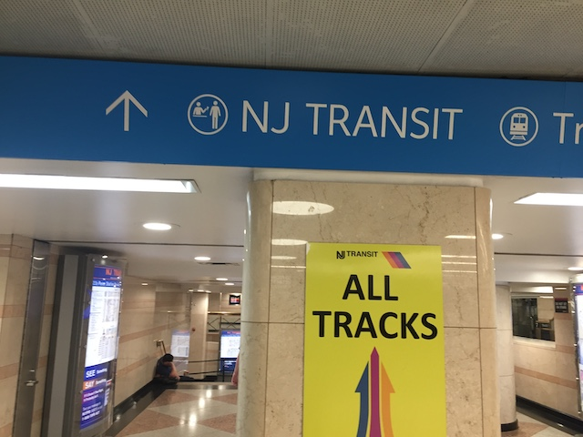
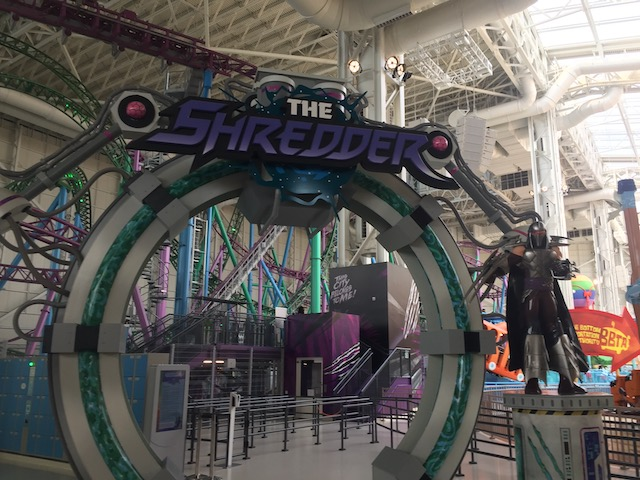
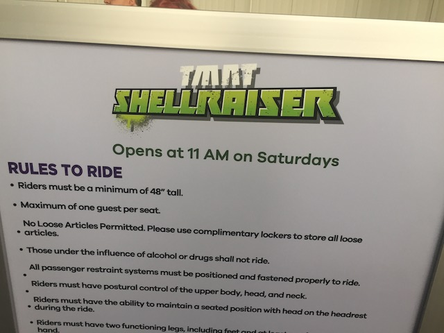
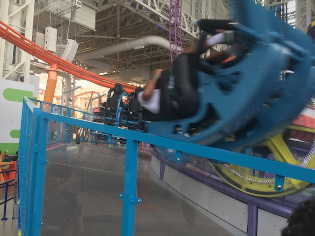
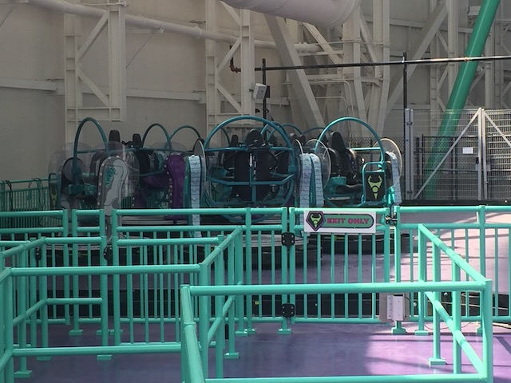
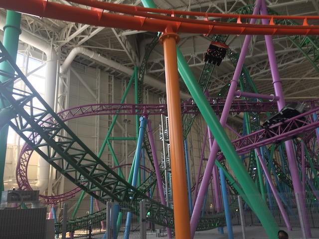
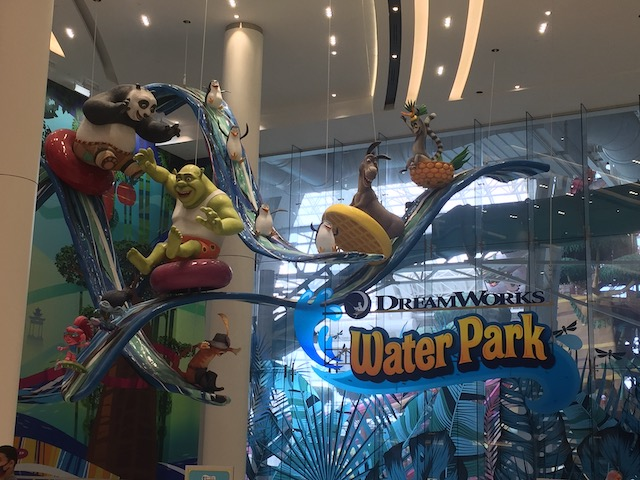
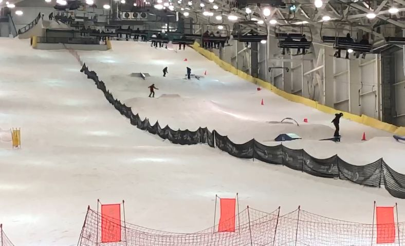

| |
East Coast Trip 2021
Lake Compounce Six Flags New England New York City American Dream Coney Island Six Flags Great Adventure
Casino Pier & Playland's Castaway Cove Dorney Park Cedar Point Kings Island Columbus Zoo & Waldameer Kennywood
Idlewild & Lakemont Park Hersheypark Knoebels

We had some fun in New York City (and we'll have more). But now, wish us luck as we venture into someplace truly scary. New Jersey.
Can't afford a proper storage unit for your air conditoning I see. Well....at least you have air conditioning.
I've seen the reviews this place has gotten. I don't think "LOVE" is the word that seems to resonate with all the other critics.
Question. Has anyone ever thought about making an ATV, only make it look like one of those soft cuddly mall animals? I would LOVE to ride one of these and make them go 60 mph over rough and rugged terrain.
So yeah. We're here at American Dream, which is another one of those GIANT-ASS MALLS, on par with Mall of America, and some of the other mega-malls that have a theme park inside.
So this place had a ROUGH opening. They opened up right at the start of 2020, RIGHT BEFORE everything closed due to COVID. I've seen countless people comparing this place to Hard Rock Park (which is part of the reason we rushed to get here). And even now, this place feels like it should be busier than it is.
This place got so screwed over by COVID that the Youtube Series "Abandoned" (Interesting concept) did a video on American Dream being abandoned and failing. Which...Happy to see that the park is NOT abandoned, but yeah. They really are struggling.
 So for lunch, while everyone else got....some random Fast Food place that I don't remember and had no interest in, I decided to stop over at the Philly Cheesesteak place since....Cheesesteaks are delicous. And we are pretty close to Philadelphia. Hopefully that improves the quality. Needless to say, I was dissapointed and not impressed.
So for lunch, while everyone else got....some random Fast Food place that I don't remember and had no interest in, I decided to stop over at the Philly Cheesesteak place since....Cheesesteaks are delicous. And we are pretty close to Philadelphia. Hopefully that improves the quality. Needless to say, I was dissapointed and not impressed.
Dessert from the Statue of Candy anyone?
 But of course, we didn't come here to go see a big mall. I can do a normal mall back home. No, we came for the theme park inside.
But of course, we didn't come here to go see a big mall. I can do a normal mall back home. No, we came for the theme park inside.
Don't worry. You'll have fun at Nickelodeon Universe! The Nickelodeon characters promise! And would they ever lie to you?
Aww. Even the Pet Kennel is Nickelodeon themed (If that's not the kennel, it should be lol).
All right. So this place has been getting A LOT of complaints and is getting a reputation on par with La Ronde and Mt. Olympus from many other enthusiasts. And while I don't think that that's fair as I had a really fun time here and didn't have most of the issues that other enthusiasts seemed to have. The one thing I have heard people complain about and TOTALLY agree with are the ticket pricing. GOD DAMN!!! I get that COVID REALLY f*cked them over, and they need to turn a profit. But the prices that they're charging for here are NOT WORTH IT!!! JESUS CHRIST!!! They (at least in June 2021 when we went) charge an arm and a leg here! Part of me feels that they'd make more money by lowering prices so that more people would come! Then again, Hard Rock Park did that and....that didn't work out. And I'm saying this as someone who WANTS them to succeed.
 I heard there was a big theme park in America I hadn't been to yet. I had to change that (Seriously, at this point, I think the biggest place I still need in the US is f*cking Darien Lake. And I'm not in a hurry to get there).
I heard there was a big theme park in America I hadn't been to yet. I had to change that (Seriously, at this point, I think the biggest place I still need in the US is f*cking Darien Lake. And I'm not in a hurry to get there).
Ooh! I want to ride the Log Log Log Ride. It fills me with such Happy Happy Joy Joy (OMG! A Ren & Stimpy Log Flume that constantly plays the Log Song! That would be SO COOL!!! Build it American Dream! Seriously! #JustDoIt).
Yep. This is why we came to American Dream. One of the best flat rides ever. It's so going in our Top 10 Flat Rides List. =P
Nah, but there's something actually worth looking foreward to.
 So Sandy's Blasting Bronco is this weird sort of funky contraption from Intamin, and I'm happy to report that this thing KICKED ASS!!!
So Sandy's Blasting Bronco is this weird sort of funky contraption from Intamin, and I'm happy to report that this thing KICKED ASS!!!
 It gives a fun forceful ride going foreward, kind of like a Sky Rocket in some ways. But then it takes it up a notch and does it all backwards. And....yeah. Doing it all backwards just makes for some really cool trippy disorienting fun.
It gives a fun forceful ride going foreward, kind of like a Sky Rocket in some ways. But then it takes it up a notch and does it all backwards. And....yeah. Doing it all backwards just makes for some really cool trippy disorienting fun.
This thing takes up a super small footprint, and I imagine that it's pretty cheap to build these. So....I really hope some clones of this thing pop up cause I REALLY was happy with this ride. One of the bigger surprises of the trip to be honest.
*Sigh* Come on American Dream. Stop it with the Zipper Intolerance.

Next up, we have Shredder.
 So this is the park's spinning coaster. And if you can't tell, this isn't just the standard Gerstlauer Spinning Coaster with a new name. It actually has a custom layout, which makes this quite a few steps above the other Spinning Coasters.
So this is the park's spinning coaster. And if you can't tell, this isn't just the standard Gerstlauer Spinning Coaster with a new name. It actually has a custom layout, which makes this quite a few steps above the other Spinning Coasters.
 I'm REALLY happy to report that this thing spun like crazy. Yeah, if you're wanting a more mild spinning coaster, this isn't gonna be it for you. Maybe we just got lucky on our ride.
I'm REALLY happy to report that this thing spun like crazy. Yeah, if you're wanting a more mild spinning coaster, this isn't gonna be it for you. Maybe we just got lucky on our ride.
But on top of that, the ride itself is just really long and has a really nice layout.
Throw in a bunch of interaction with TMNT Shellraiser, and you have one of the best spinning coasters. #5 (Just behind Winjas, Tornado @ Bakken, Geiko Live Coaster @ Tokyo Joypolis, and Spin Runway @ Yomiuriland). Best Spinning Coaster in America (This excludes Time Traveler since....I may not have gotten there yet, but come on. Overdue to get back to Silver Dollar City)! YAY!!!
 So yeah. Shellraiser is having some difficulties, so....let's get this out of the way.
So yeah. Shellraiser is having some difficulties, so....let's get this out of the way.
THAT'S THE CARS YOU RIDE IN!!? ARE YOU F*CKING SERIOUS!!?
 I have seen legitimate kiddy coasters with more comfortable trains and legroom. This has no excuse. Ugh.
I have seen legitimate kiddy coasters with more comfortable trains and legroom. This has no excuse. Ugh.
Putting the HORRIBLE trains aside, this is the parks family cruiser coaster. It's basically their version of Jaguar or Pepsi Orange Streak.
 Well, aside from the HORRIBLE trains, another advantage those two have over this ride is that it's surprisingly short. Yeah. I was really surprised at just how quickly this ride was over. I get that it's inside a mall. But....so is Pepsi Orange Streak. I get that they do double-laps to compensate for the short length, but....yeah. Very dissapointed in Nickelodeon Slime Streak. It really felt more like a kiddy coaster than I was expecting (It's not, but it's closer to one than I was expecting).
Well, aside from the HORRIBLE trains, another advantage those two have over this ride is that it's surprisingly short. Yeah. I was really surprised at just how quickly this ride was over. I get that it's inside a mall. But....so is Pepsi Orange Streak. I get that they do double-laps to compensate for the short length, but....yeah. Very dissapointed in Nickelodeon Slime Streak. It really felt more like a kiddy coaster than I was expecting (It's not, but it's closer to one than I was expecting).
 But hey. At least you get a great view of everything in Nickelodeon Universe. That's a plus....I guess. Thumbs down.
But hey. At least you get a great view of everything in Nickelodeon Universe. That's a plus....I guess. Thumbs down.

Ooh! Shellraiser opened up. Time to get on that.
So while this is the star attraction of the park (though honestly, Sandy's Blasting Bronco gives it a run for its money). But unlike everyone else, this wasn't too unique as this is a clone of Takabisha @ Fuji-Q Highlands.
 One difference is that the pre-launch section that's in the dark on Takabisha, you can clearly see that part of the ride on Shellraiser. It's not hidden at all.
One difference is that the pre-launch section that's in the dark on Takabisha, you can clearly see that part of the ride on Shellraiser. It's not hidden at all.
 While it is cool to get pictures of this part of the ride....yeah. It's much better in the dark.
While it is cool to get pictures of this part of the ride....yeah. It's much better in the dark.
The Banana Roll on Takabisha kicks ass, and it kicks ass here too! =)
 Bro! Can you guys help us! Now we've got some theme park in Japan claiming we stole their roller coaster. Can you help us prove that that's total bogus man!?
Bro! Can you guys help us! Now we've got some theme park in Japan claiming we stole their roller coaster. Can you help us prove that that's total bogus man!?
OK. Time to get on some of the flat rides. I think I've seen this ride before.
NICE!!! Their version of Aang's Gliders is an Air Race! This is SO much better than the glider rides I was imagining this to be. =)
Sweet! I FINALLY found another version of Spin Cycle found at Silverwood. Thanks for adding this American Dream. They really are a crazy flat ride.
 Quit faking it Arnold. S&S Drop Towers do NOT provide that much airtime.
Quit faking it Arnold. S&S Drop Towers do NOT provide that much airtime.
The drop tower here....I'm torn on. On the one hand, you get GREAT NYC views, and it runs a program similar to Superman: Tower of Power @ SFOT. On the other hand, the launches and weaks somehow feel even weaker than a standard S&S Tower. It feels a little.....frog hoppy, if you get what I mean.
Oh crap! There's still another credit here that we're missing.
*Sigh* This was closed all day. I know another complaint people have with this place is that way too many rides are closed. And....I've seen some reports where yeah. Totally true. And even with our visit, we can't say everything was open due to this. And yeah. It's a bummer since Half-Pipes are really fun. But I guess I'll just have to come back for this. At least it wasn't Shellraiser or Sandy's Blasting Bronco.
 Hell yes! I want more rides on Sandy's Blasting Bronco! That little squirrel sure knows her sh*t.
Hell yes! I want more rides on Sandy's Blasting Bronco! That little squirrel sure knows her sh*t.
What is that boy genius up to now? Why is he even still in school and not selling weapons to the US Military?
Ooh! Another one of those Chance Unicoasters. I love these things and am very happy that more are catching on, and that they built one here. Your flat ride collection is pretty good Nickelodeon Universe. Very happy with it.

And of course, Scott and I managed to get this thing flipping like crazy since....we like it that way.
Ooh. With all the crazy flat rides they've presented so far, I'm looking foreward to seeing what a Flip and Spin of Doom is.

So these are basically bumper cars with the ability to flip. Super cool idea, but unfortunately, these seem to be closed. And closed long-term. Please fix this as this ride seems really cool.
"Ugh. This stupid bus is gonna make me late. I have to get to New York City in 20 minutes for my clarinet concert! And on top of that, I have to sit next to this barnacle-head!"
Come ride my ride if you dare.
While this does seem like a cool ropes course, No. The way this park is overpriced, that is a big "HELL NO!" from me.
Yeah. We gotta get more rides on TMNT Shellraiser. It still is the 2nd (or 3rd I guess since I slightly prefer Takabisha, but they're clones, and so close that I'm calling it a draw).
 The view on this is surprisingly on par with Takabisha. I know Takabisha is right by Mt. Fuji. But thanks to all the windows, you get a really good view of NYC at the top of the lifthill. And the constant interaction with Shredder is cool.
The view on this is surprisingly on par with Takabisha. I know Takabisha is right by Mt. Fuji. But thanks to all the windows, you get a really good view of NYC at the top of the lifthill. And the constant interaction with Shredder is cool.

Teenage Mutant Ninja Turtles vs Shredder! FIGHT!!!
Hey kids! Stop bugging us with construction updates! Just imagine the new shop! Use your imagination like Spongebob says to!
*Bark bark* I'm not like the other cops! I don't just stand around and allow a mass shooter to shoot up an elementary school because I'm too cowardly to do my job despite shooting unarmed black men under the geise of self-defense! That's not me at all! I'm a good boy!
"I AM REPTAR! SEE ME GO ROUND! HEAR ME GO ROAR!" (Seriously, that is a really cool carousel).
I may not have had the best day ever, but I did have a really fun day at Nickelodeon Universe and do hope to come back someday. Just fix your ticket prices before then please.
I regret to inform you that we did NOT do the Dreamworks Waterpark.

Now we really were considering doing this at one point since....it really does look like a kickass water park. But....the price was just too much. Maybe next time if the price drops. But we'll find other stuff to do.
So Scott & Steve decided to do some exploding Mini-Golf, and while that does sound fun, AJ & I had a much better idea instead.
Yep. We decided to go skiing. Skiing in June in New Jersey. Is it absurd? Yes. But god damn it! It's fun!

Quick little tip. If you plan on going skiing.....actually ski. We saw some random guy having trouble getting on the ski lift, then refuse to just go down for the longest time. He then tried, repeatedly fell on his face, before eventually walking down the hill halfway. Sorry dude, but that's hilarious. Come on, if I can do it, someone with NO skiing training and had only done it ONCE prior to today, then so can you. =P
So I had gone skiing once before, but that was 12.5 years ago. And I remember being the only person in my family who enjoyed skiing. So what are my thoughts on it as an adult?
I really liked it. I honestly feel like I probably could advance up to intermediate blue square runs if this was a full skiing trip. However, for as much as I enjoyed this, I won't be doing a ski trip any time soon for one simple reason. Money. Skiing is f*cking expensive. And I struggle enough doing these trips, let alone the other fun expensive hobbies and tastes I have. Throw on top of that more bills and adult bullsh*t combined with rampant price-gouging....I mean inflation, and yeah. I can't do a ski trip. If you see a ski trip update on Incrediblecoasters, that's a low-key sign that I'm rich now most likely.
Hmm. What goes good with skiing? Hot Chocolate? Nah! Let's go for Boba! The boba is made out of panda fat here. >=)
You can tell that Gary is not part of this trip as we did not stop at the nearby carnival. Besides, I have that credit anyways. Yeah, riding a Zipper would be really fun. But we've got better things to do.
 So long New Jersey. We'll be back the day after tomorrow. But we had a lot of fun at American Dream.
So long New Jersey. We'll be back the day after tomorrow. But we had a lot of fun at American Dream.
Welcome back to New York City. Here's the World Trade Center for you.
So Scott & Steve have friends who live in NYC, and....I think they recommended this place.
Yeah. It was a bit pricy, but still really good. And hey. We're on vacation. Might as well splurge a little.
 Hey guys! Let's go see Aladdin on broad....DAMN IT!!!
Hey guys! Let's go see Aladdin on broad....DAMN IT!!!
Coney Island
Home
|